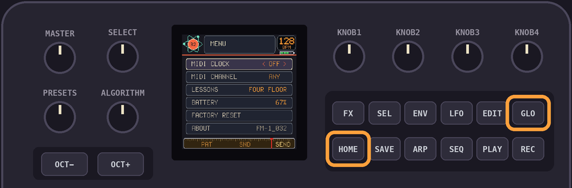
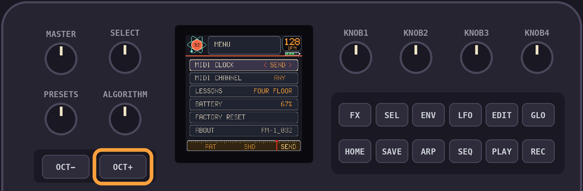
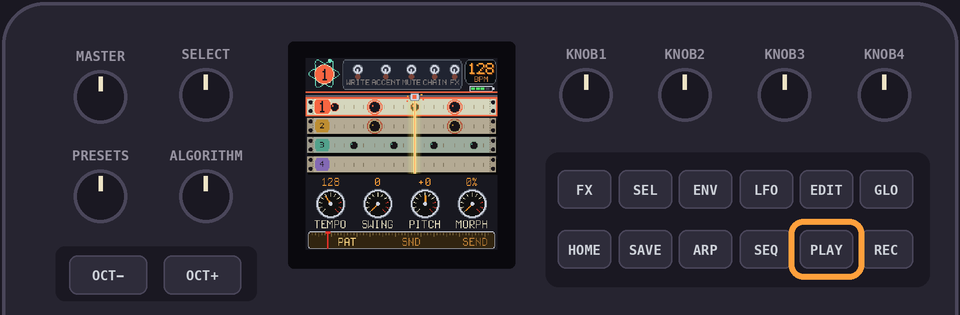

Drumlab TUTORIAL
Drumlab is the clock, Smileyface follows. Two FM-1s, one tempo.
1Drumlab sends the clock
Hit
GLO + HOME for the menu.
MIDI CLOCK is the first row. Hit
OCT+ until it says SEND.
Tap
HOME to leave.2Wire them up
Plug both FM-1s into your computer.
In your DAW, or any MIDI router, send Drumlab's MIDI out to Smileyface's MIDI in.
Pass only the clock, start and stop. Drumlab's pad notes would play Smileyface's voice.
3Play
Hit
PLAY on Drumlab. Smileyface starts with it and keeps its tempo.
KNOB 1 on Drumlab sets the tempo for both. PLAY stops them both.Smileyface lives here.